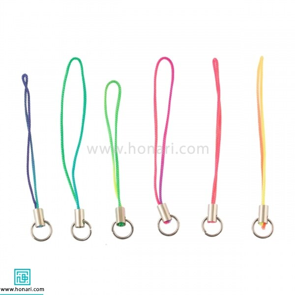

هنری
search
عبارت مورد نظر را جستجو کنید
group_add
ورود
shopping_cart
سبدخرید
looks_4
نقاشی دکوراتیو
رزین
زیورآلات
چرم دوزی
صابون سازی و لوازم آرایش گیاهی
نقاشی روی شیشه
نقاشی روی پارچه
شماره دوزی
شمع سازی
معرق کاشی
سایر

محمود فرشچیان
محمود فرشچیان (زادهٔ ۴ بهمن ۱۳۰۸) نقاش ایرانی است. او برای ساخت آثار با مضامین شیعی شهرت دارد.[۱] برخی از
آثار او توسط وزیران امور خارجهٔ ایران (کمال خرازی و محمدجواد ظریف) به عنوان هدیه به سفرا و وزرای کشورهای
خارجی اهدا شدهاست.[۲] آثار او در بسیاری از شهرهای جهان مانند پاریس، نیویورک، و شیکاگو به نمایش گذاشته
شدهاست.[۳] در سال ۱۳۹۳، نشان افتخار جهادگر عرصه فرهنگ و هنر به وی اهدا شد.
قبول پدر محمود فرشچیان که نماینده فرش اصفهان بود، او را به کارگاه نقاشی میرزا آقا امامی برد و امامی به
استعداد فرشچیان در زمینه نقاشی پی برد. فرشچیان پس از آموزش نزد او و عیسی بهادری و دانشآموختگی از مدرسه
هنرهای زیبای اصفهان، برای گذراندن دوره هنرستان هنرهای زیبا به اروپا سفر کرد و چندین سال به مطالعهٔ آثار
هنرمندان غربی در موزهها پرداخت. بنا بر گفته خودش، در اروپا اول کسی بود که با بستهای از کتاب و قلم وارد
موزه میشد و آخر از همه از موزه خارج میشد.
پس از بازگشت به ایران، فرشچیان کار خود را در اداره کل هنرهای زیبای تهران آغاز کرد و به مدیریت اداره ملی و
استادی دانشکده هنرهای زیبای دانشگاه تهران برگزیده شد. محمود فرشچیان، هماکنون در نیوجرسی آمریکا ساکن است و
سفرهای دورهای و فصلی به ایران دارد.
پس از مرگ پابلو پیکاسو، روزنامه اطلاعات در ۲۰ فروردین ۱۳۵۲ از بزرگان نقاشی ایران شامل بهجت صدر، امینالله
رضایی، محمود فرشچیان، معصومه سیحون، فرامرز پیلارام و ایران درودی دعوت کرد و گفتههای آنها را در ویژهنامه
خود منتشر نمود.[۴]
فیلم مستندی نیز با عنوان عشقپرداز به کارگردانی حمید کاویانی و با حضور عزتالله انتظامی، پرویز پورحسینی و با
صدای زیبا بروفه در نکوداشت او ساخته شدهاست که در آیین رونمایی کتاب پنجم او به نمایش درآمد.[۵] محمود فرشچیان
سه فرزند به نامهای علیمراد، لیلا و فاطمه دارد. علیمراد فرشچیان در ایالت فلوریدا آمریکا مشغول طبابت
میباشد و لیلا در شغل تحلیلگر رفتار در ایالت نیوجرسی ساکن است و فاطمه فرزند دیگر محمود فرشچیان که دندانپزشک
بود در دهه ۶۰ به سازمان مجاهدین خلق ایران پیوست و سال ۱۳۶۷ در عملیات فروغ جاویدان کشته شد.[۶]
امبرتو بالدینی، (به ایتالیایی: Umberto Baldini) استاد فقید تاریخ هنر و رئیس دانشگاه بینالمللی هنر فلورانس
ایتالیا معتقد بود برای دریافت باطنی یا درونی کار فرشچیان دیدی ژرفنگر لازم است و صبری زمانگیر؛ و فرشچیان در
حوزه نقاشی ایرانی یک نقطهٔ عطف و پدیدهای شگرف بهشمار میآید.[۷]
از فرشچیان نقل شده که چون از امام هشتم شیعیان برای دست معیوبش شفا گرفت خادم افتخاری حرم وی شدهاست.[۸]
استاد منیژه آرمین در کتاب «کیمیاگران نقش _زندگینامه داستانی هفت نقاش » مطالب جالبی دربارهٔ زندگی استاد
گرانقدر خویش نوشته است .

مولود کعبه
« تولد امام علی (ع) در کعبه» که روایتگر متولد شدن علیابن ابیطالب است. حضور فرشتگان و ادای
احترام آنها به فاطمه بنت اسد؛ مادر امام که نوزاد خود را در آغوش دارد، حکایتی روشن از قدر است و
اهمیت آن رویداد بزرگ؛ یعنی دیده به جهان گشودن حضرت علی(ع) است.
5,000,000,000 ®
4,950,000,000 ®

آخرین نماز
روایتی تلخ از شهادت امام علی (ع) در مسجد کوفه؛ به دست ابن ملجم ملعون است؛ اثری که در آن قاتل،
کریهالمنظر تصویر شده و امام علی مطابق با روایات، در سجده نماز صبح است.
4,150,000,000 ®
3,950,000,000 ®
history
ارسال سریع به سراسر کشور
local_shipping
ارسال رایگان خرید بالای ۴۵۰ هزارتومان
business_center
امکان مرجوعی کالا تا ۱۰ روز پس از دریافت
دسته محصولات پرفروش
پودر سنگ متا
منجوق میوکی
نخ دمسه
انواع چرم
انواع رنگ
رزین اپوکسی
event_noteجدیدترین کالاها
-------------------------------------------------------------------------------

کاغذ دکوپاژ
کاغذ دکوپاژ کد 6153
150,000 ریال
100,000

شات شمع
ارتفاع 8 قطر 10 cm
350,000 ریال
280,000

مهره
طرح ساکورا قرمز 10 mm
250,000 ریال
230,000

بند آویز موبایل
بند آویز موبایل چند رنگ
450,000 ریال
380,000

نوار پنبهای
نوار پنبهای 2.5 سانتی
550,000 ریال
490,000
phone
تلفن پشتیبانی 09395472170
هنری
تحقق رویاهای هنرمندانه تو
location_on
بوشهر، خیابان امام خمینی، کوچه بوستان یکم، آموزشگاه کلیک
personرسول شماخی
تمامی حقوق برای آموزشگاه کلیک محفوظ است و انتشار با ذکر دقیق مطلب و لینک به سایت کلیک بلامانع است